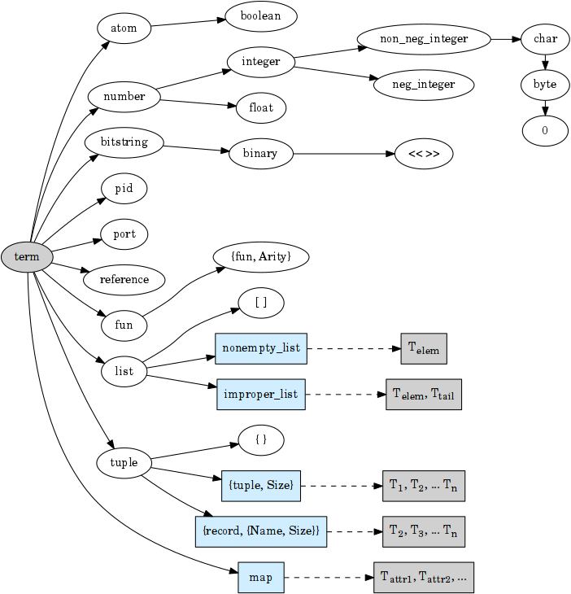

The purpose of dumpsterl is to provide a powerful, extensible and user-friendly framework for data exploration in NoSQL environments.
Besides the material in this guide, there is also API documentation.
Further resources are listed on the Overview page.
1. Getting started
Dumpsterl is designed to be simple, clear and easy to use. Getting it up and running on your system should not take more than a couple of minutes.
1.1. Required versions and environments
Dumpsterl is currently tested on:
-
Erlang/OTP major releases starting with R16B;
-
running on contemporary Linux machines.
Older Erlang/OTP releases will not be covered. New major releases will be added to the testing pipeline as they become available.
The list of operating systems will certainly be extended; the backend systems that inspired the creation of dumpsterl run on Linux. However, there should be nothing fundamentally stopping dumpsterl to run on any other system where Erlang/OTP itself is supported.
1.2. Known limitations
The current version of dumpsterl comes with a few limitations that are not inherent to the concept, and are planned to be resolved in future versions.
-
The dumpsterl shell does not support inputting complex Erlang expressions such as funs. For this reason, setting the field and attribute specs to values other than an integer or a list of integers is not possible. The Erlang syntax of referring to a record field via
#Record.Fieldis also not supported here. Note that all these are perfectly working via the Probe API, so if you need these features, please use that API. Examples are provided in the Probe API section.
1.3. Obtaining and compiling dumpsterl
In a suitable location, clone the source repository:
$ git clone https://github.com/tomszilagyi/dumpsterl
Enter your local repo and compile the project:
$ cd dumpsterl $ make
Optionally, if you want to run some tests to verify your installation, you may run one of:
$ make eunit (1) $ make check (2)
| 1 | EUnit tests (quick!) |
| 2 | EUnit tests, Common Test suites and Dialyzer (sloooow!) |
1.4. First steps with dumpsterl
Before using dumpsterl on a system with real data, it is a good idea to get your feet wet in a safe environment.
1.4.1. Run dumpsterl in an empty Erlang node
Now you are ready to run dumpsterl. You typically want to run it in an already existing “host system” where dumpsterl has access to your data, but first let’s run it in a separate, bare-bones Erlang node:
$ make shell Eshell ... 1>
Now you have an Erlang shell with dumpsterl loaded. You can start the dumpsterl shell right away:
1> ds:shell().
Dumpsterl interactive probe shell.
Type 'quit' + <enter> to get back to the Erlang shell;
'help' + <enter> to get help.
ds =>
That is our prompt --- let’s try help right away:
ds => help
Commands:
help [<command|param|option>]
Type 'help help' for useful pointers.
show [<param|option> ...]
params: type table field attrs options
options: dump hll_b limit mnesia_dir procs progress rec_attrs samples term
set <param|option> <value>
See above for params and options.
run
stop
gui [<dumpfile>]
quit
As the above output suggests, the command show displays all the
currently set configuration values:
ds => show
params:
-------
type: ets
table: file_io_servers
field: 0
attrs: []
options:
--------
dump: "ds.bin"
hll_b: 8
limit: 1000
mnesia_dir: undefined
procs: 4
progress: 0.5
rec_attrs: true
samples: 16
term: "vt100"
In case you haven’t noticed yet, there is TAB completion in this
shell, which expands commands, parameters, options and even (to a
limited extent) valid input values for several set command subtypes
(including table names)!
Feel free to explore the shell from here. Hint: there is online help
(which you can read by typing help <keyword>) for everything; type
help all to read it all. You can also find the output of this
command here.
1.4.2. Try dumpsterl with the included test database
Dumpsterl comes with a test suite, and as part of that, a test data generator. This generator creates synthetic test data in either of the database formats supported by dumpsterl, so all of those can be tested interactively.
Since this is part of the test code that comes with dumpsterl, the source needs to be recompiled with the test code also included. The quickest way to do this is to run the EUnit tests. This triggers a rebuild of the source with the test code compiled in. When that is done, start a shell just as before. Finally, the code path must be set up so the test-only modules will be found by the Erlang module loader.
$ make eunit
$ make shell
1> code:add_patha("test").
Now you can use the function ds_testdb:generate/1 to create a test
database. Test data generated manually will be put under test/data.
Let’s create test databases for each supported table type:
> ds_testdb:generate(mnesia). > ds_testdb:generate(ets). > ds_testdb:generate(dets). > ds_testdb:generate(disk_log).
These will produce console output stating the names of the tables created, and populate them with 675,000 records. If you wish to change the names of the tables or specify the number of records, use these extended forms:
> ds_testdb:generate(mnesia, mytable_mnesia, 10000). > ds_testdb:generate(ets, mytable_ets, 10000). > ds_testdb:generate(dets, mytable_dets, 10000). > ds_testdb:generate(disk_log, mytable_disk_log, 10000).
Please note that you cannot create a mnesia and an ets test table with the same name, because they will clash. This happens because under the hood, the mnesia table uses an ets table with the same name.
Once you have some test tables generated, you can run dumpsterl on them either automatically in a pre-defined way (this is useful for testing purposes) or interactively.
To spec the test tables (shown for the mnesia table type, but similar for the others as well):
> ds_testdb:spec(mnesia).
This will run the probe with some pre-defined parameters on the table
generated by ds_testdb:generate/1. An extended form allows you to
supply the custom table as well as a set of attribute names (the test
code knows the complete attribute definitions). The list of attribute
names may contain none, both, or either of key and ts.
> ds_testdb:spec(mnesia, mytable_mnesia, [key, ts]).
A spec dump file will be created with a predefined name. To open the GUI on this spec dump, simply call:
> ds_testdb:gui(mnesia).
Or, in case of a custom table name:
> ds_testdb:gui(mnesia, mytable_mnesia).
Now you should see the GUI of dumpsterl, similar to the following image:
If you see a similar window, congratulations! You have dumpsterl up and running. Feel free to click and browse around!
| You can increase the GUI font size with Ctrl++ and decrease it with Ctrl+-. |
Now that there are a few tables with some complex data to play with, you can also start the interactive shell and play around in there:
> ds:shell().
Dumpsterl interactive probe shell.
Type 'quit' + <enter> to get back to the Erlang shell;
'help' + <enter> to get help.
collecting record attributes from 126 loaded modules ... read 121 records.
collecting record attributes from test/data/db/schema.DAT ... read 2 records.
installed attributes for 122 records.
ds => set type mnesia
type: mnesia
ds => set table mytable_mnesia
table: mytable_mnesia
ds => set limit infinity
limit: infinity
ds => set attrs [{key,2}, {ts,3}]
attrs: [{key,2},{ts,3}]
ds => show
params:
-------
type: mnesia
table: mytable_mnesia
field: 0
attrs: [{key,2},{ts,3}]
options:
--------
dump: "ds.bin"
hll_b: 8
limit: infinity
mnesia_dir: "test/data/db"
procs: 4
progress: 0.5
rec_attrs: true
samples: 16
term: "vt100"
ds => run
running probe on 4 parallel processes.
processed 10,000 in 3.9 (2.59k records/sec)
spec dump: 875,166 bytes written to ds.bin
probe finished.
ds => gui
2. Using dumpsterl
2.1. Running dumpsterl on your live system
|
DISCLAIMER
Dumpsterl comes with ABSOLUTELY NO WARRANTY. Please proceed ONLY if you are confident that dumpsterl will not harm your data. A good way to gain that confidence is to audit the sources of dumpsterl and make sure that it does not contain any calls that would delete or alter data in any of your databases. Regardless of that, ALWAYS HAVE BACKUPS. By proceeding, you accept that the authors of dumpsterl are exempt from any liability with regard to any possible consequences. Use dumpsterl exclusively AT YOUR OWN RISK. If possible, use your secondary (staging, backup, hot-backup, etc.)
system instead of the one that actually handles live traffic.
Dumpsterl can easily inflict a large amount of CPU load on the system,
so you probably do not want to do this on your real production
machine. If you still decide to do that, make sure to set the |
There are two ways to use dumpsterl with a production-like system:
-
Include the
dumpsterlapplication in your Erlang release; -
Load the BEAM files of an externally compiled
dumpsterlinto your running system.
2.1.1. Including dumpsterl among your Erlang applications
If you have a complete Erlang system (consisting of several applications arranged as an Erlang/OTP release), you might find it convenient to simply add dumpsterl to your applications. Depending on your setup, adding dumpsterl as a git subrepo might be convenient.
Dumpsterl is built with the erlang.mk build
tool. This practically means that building it is a matter of issuing
make, perhaps with some useful targets such as test and clean.
If you have a recursive make-driven build system for the whole
release, this makes it very simple to add dumpsterl.
2.1.2. Loading dumpsterl from an external location
You might not want to add dumpsterl as a regular application to your Erlang system. In this case a good method is to obtain and compile dumpsterl in a separate directory (just as shown at the beginning of this chapter). Once the application is compiled, you simply add its path to your running host system’s set of code load paths.
For example, let’s assume that we have a system running at
/huge/erlang/system. This is a production system that is already
deployed and running. We don’t have the option to modify it by adding
applications. We can still inspect it with dumpsterl using the
following commands.
$ cd /tmp $ git clone https://github.com/tomszilagyi/dumpsterl (git output omitted) $ cd dumpsterl $ make
| Please make sure that the Erlang version you use to compile dumpsterl is the same as the version your system is running with. Since you are on the same host, this should be easy, but worth keeping in mind. |
Now, go to your system’s Erlang (remote) console and add the dumpsterl BEAM path to the code path. This makes dumpsterl usable on your system, which you can verify by starting the interactive shell.
1> code:add_pathz("/tmp/dumpsterl/ebin").
2> ds:shell().
Dumpsterl interactive probe shell.
Type 'quit' + <enter> to get back to the Erlang shell;
'help' + <enter> to get help.
collecting record attributes from 953 loaded modules ... read 1259 records.
collecting record attributes from /huge/erlang/system/db/schema.DAT ... read 181 records.
installed attributes for 1260 records.
ds =>
You should recognize the database path in the above output. If you have a huge amount of loaded code, the above output will take a few seconds to appear, so don’t worry.
2.1.3. Running the probe on raw Mnesia table files
|
The features described in this section come with a number of caveats, so make sure you read everything and thoroughly understand the tradeoffs you are making before attempting any of these “dirty” methods. The usual disclaimers apply doubly here! |
Dumpsterl supports directly reading the raw table files backing Mnesia tables. This capability is useful mostly if you do not have a running Mnesia instance on the Erlang node that runs the probe. Note, however, that the modules of your system should still be loaded, so that the probe can gather all the record attributes referenced by the data.
Mnesia stores the data in different files under its database
directory. The data of each table is stored in one or more files named
after the table. The extension of the files indicates the file type
that corresponds to the storage_type of the table:
.DAT files
Each .DAT file contains a regular DETS table that can be directly
read by the dumpsterl probe via setting the parameter type to dets
and the table to the filename of the .DAT file. The performance
gain of skipping Mnesia is usually negligible, as iterating through a
DETS table is generally quite slow.
For each ram_copies table, Mnesia keeps a backup in a .DAT file.
The table might be written by a running Mnesia at any time (the user
can request this via mnesia:dump_tables/1). However, chances are
good that the backup was last overwritten with the then-latest table
contents last time Mnesia was stopped. So it might not be a good idea
to work around Mnesia for a ram_copies table; the on-disk backup
might be seriously out of date.
The same kind of .DAT file is present also for disc_only_copies
tables. Naturally, this file is always up-to-date with the table
contents. Whether or not you want to touch a table file kept open by
a running Mnesia instance is an entirely different question. If you
have the option to stop Mnesia, we strongly recommend that you do so.
|
Reading a DETS table file kept open by Mnesia might result in an exception within the probe similar to this one: Note the If this happens, DON’T PANIC. Your data is safe. It’s only that the
DETS file is not properly closed yet (which is OK, since mnesia keeps
it open), therefore dumpsterl can’t open it for reading. You just
have to find another way to access the table — the easiest is to just
go via |
.DCD files
For disc_copies tables, a pair of .DCD and .DCL files are
usually found, although the .DCL is not always present. These files
are disk_log files (accessible via the Erlang module with the same
name, part of the kernel application). The files have different
internal formats. A .DCD file holds the contents of a table at a
certain point in time as a stream of records corresponding to table
rows. The accompanying .DCL contains the “database log” with
entries describing changes (inserts, deletes, updates) relative to the
snapshot in the .DCD.
Dumpsterl supports directly reading the .DCD, but not the
.DCL. Reading the .DCD of a table skips all the overhead of going
through Mnesia. It also yields much better probe parallelization
(utilizing a larger number of cores, if you have them), because the
disk_log is read very efficiently, in chunks that typically contain
hundreds of rows. All you need to do is set the parameter type to
disk_log and the table to the filename of the .DCD file. Note
that in contrast to reading the file backing an opened DETS table,
this should always work!
The obvious downside is that the changes already accumulated in the
.DCL log will not be taken into account. Simply put, you are not
looking at the latest data. In practice, this usually means that the
probe will have missed a small percentage of newly inserted records or
changes to existing records. The effect is usually negligible if you
want to get a general idea of the data in the table, but might be a
problem if you are after the latest changes. In that case, there is
another option to avoid going through mnesia: set type to ets and
read the ets table with the same name.
The following transcript shows setting up and running the probe on the
.DCD of our synthetically generated mnesia test table.
> ds:shell().
Dumpsterl interactive probe shell.
Type 'quit' + <enter> to get back to the Erlang shell;
'help' + <enter> to get help.
collecting record attributes from 170 loaded modules ... read 205 records.
collecting record attributes from test/data/db/schema.DAT ... read 2 records.
installed attributes for 206 records.
ds => set type disk_log
type: disk_log
ds => set table "test/data/db/widget_mnesia.DCD"
table: "test/data/db/widget_mnesia.DCD"
ds => set limit infinity
limit: infinity
ds => set attrs [{key,2}, {ts,3}]
attrs: [{key,2},{ts,3}]
ds => run
running probe on 4 parallel processes.
processed 638,716 in 4:01.7 (2.64k records/sec), dumped 1,021,090 bytes
spec dump: 1,053,643 bytes written to ds.bin
probe finished.
|
As seen above, we managed to read 638,716 records of the total 675,000 in the mnesia table of our generated test database. In our case, the last 5% of all inserted rows did not reach the probe. Your case will probably differ due to different mnesia access patterns. |
|
This section showed how to use the |
2.1.4. Inspecting the result
On a live system, you don’t want to run the GUI at all. To inspect the
results, take the dump file generated by the probe and examine it on
your local machine. In the above example, let’s say that we were
running the Erlang remote shell with the working directory at
/huge/erlang/system; all dump files, if we didn’t include a path in
their name, will be found in that directory.
Copy the dump to your local machine (we assume it was written to its default filename):
joe@desktop:~/src/dumpsterl$ scp hugesys:/huge/erlang/system/ds.bin . (output omitted) joe@desktop:~/src/dumpsterl$ make shell Eshell (abort with ^G) 1> ds:gui().
And there you go — inspect and browse the spec to your liking!
Optionally, if you have a different filename, pass it as an argument
to ds:gui/1:
1> ds:gui("ds_hugesystem_mytable_full.bin").
2.2. API examples
For your inspiration, this section contains some basic usage examples of the lower level APIs. These can be used for manual work in the Erlang shell, but also open the door towards automating/scripting the process of collecting specs. The below examples work on the test database introduced earlier in this guide; adapt them to suit your own use. Please also refer to the API documentation.
All code examples in this chapter show commands to be run in the
Erlang shell. For ease of copy-pasting them, the Erlang shell prompt
marker > has been omitted from them.
2.2.1. Probe API
The probe API offers an Erlang interface to spec tables. The same probe will be run as if you had set up everything via the dumpsterl probe shell, but this API makes it possible to automate things.
|
In this section we show field spec syntax that can only be passed to
the probe via the Probe API. The dumpsterl shell currently does not
support inputting these via the |
Probing synchronously with ds:spec/3,4
The functions ds:spec/3,4 run the probe in a synchronous
manner. This means that the caller gets blocked while the probe runs,
and receives the spec as return value when the probe is done.
limit defaults to 1000 records)rr(ds_testdb).
ds:spec(mnesia, widget_mnesia, #widget.ftp).In the above example, we used the Erlang syntax #Record.Field. This
is syntactic sugar to refer to the field number of the given field,
and requires that the appropriate record definition is loaded into the
Erlang shell. This can be done via the Erlang shell built-in
rr(Module) where Module is a module that includes the record
Record in its source (either directly or via header inclusion).
If we would like to spec the whole record found in the table, we just pass 0 as the field number:
limit defaults to 1000 records)ds:spec(mnesia, widget_mnesia, 0).In the above examples, we have not passed any options to the
probe. The default setting for limit is a safely low value, 1000
records. Usually, we want to process a much larger amount of data. So
we need to raise the limit option setting. In that case it is also a
good idea to see progress output and have dumpsterl write dumps of the
spec (both periodically as it progresses, and a final one at the end).
We can set the limit to an arbitrary positive integer, or the atom
infinity to process all the records in the table. We choose the
latter. We also set the progress output to refresh at its default
rate, and turn on the dump:
ds:spec(mnesia, widget_mnesia, #widget.ftp, [{limit, infinity}, progress, dump]).The options passed as the last argument in the above example are
dumpsterl probe options with a proplist syntax. For the full list and
description of the available options, type help options in the
dumpsterl shell, or look for Options: in the reference stored
here.
At this point it is worth noting that we received a large Erlang data
structure as the return value of the ds:spec/1 function. This is
nothing other than the spec itself, the same data that was dumped to
the file ds.bin. This spec can be processed further, but the
simplest thing we can do with it is pass it directly to a newly opened
GUI:
ds:gui(v(-1)).At this point you might become interested in one of the fields in this
embedded #ftp{} record. Let’s say that you are after the email
field, and not interested in anything else. The way forward is to use
a list of chained field specs:
ds:spec(mnesia, widget_mnesia, [#widget.ftp, #ftp.email], [{limit, infinity}, progress, dump]).You might have noticed that the probing process got much faster, since the data being spec’d is much simpler. If you have lots of data, it pays to do some preliminary runs on the whole record with a lower limit, and select the field of interest.
You could have accomplished the same result via a field spec function doing the same data selection:
FieldSpecF = fun(Widget) -> Widget#widget.ftp#ftp.email end,
ds:spec(mnesia, widget_mnesia, FieldSpecF, [{limit, infinity}, progress, dump]).This is usually slightly slower than the equivalent chained field spec, so why would you use it? Obviously because it allows you to do much complex things. Basically, you can perform arbitrary selection of data. You can also perform filtering, by making the fun crash or throw on records that you do not want to include.
You can also combine this with the chained field spec list; items in
those list can be any valid field spec. So let’s do something more
complex. We will look at the #ftp.password field, but we are only
interested in those that are strings shorter than 6 characters.
We could do it with a single field spec function, but for the sake of
illustrating the above, let’s do it with a chained field spec list.
f(FieldSpecF),
FieldSpecF = fun(Ftp) ->
true = length(Ftp#ftp.password) < 6, (1)
Ftp#ftp.password (2)
end,
ds:spec(mnesia, widget_mnesia,
[#widget.ftp, FieldSpecF], (3)
[{limit, infinity}, progress, dump]).| 1 | Make it crash (or throw) to filter out unwanted data. |
| 2 | Return the data to spec. |
| 3 | Chained field spec containing an integer and a fun field spec. |
Looking at the console output and a GUI with the resulting spec, you
might have noticed a discrepancy: the probe reported 675,000 records
being processed, but in the GUI, the root nonempty_list only has a
count of about 450,000. The difference is the number of records where
the field spec did not evaluate. The reason in our case is that we
deliberately made it crash for data we were not interested in.
Finally, let’s look at an example of specifying attributes. By looking
at the data, we have deduced that the field #widget.id contains the
table key, and #widget.create_date contains a timestamp when the
data originated. In such a case, it pays to specify these as data
attributes. Going back to our basic example for the #widget.ftp
field, this is how it would look with attributes:
ds:spec(mnesia, widget_mnesia,
{#widget.ftp, (1)
[{key, #widget.id}, (2)
{ts, #widget.create_date}]},
[{limit, infinity}, progress, dump]).| 1 | Field spec |
| 2 | Attribute specs |
The trick is to pass these attribute specs as a keyed list, included
in a tuple with the field spec. Note that for the attributes, we are
referencing parts of the record outside the actual data we spec (the
#widget.ftp field). This is perfectly fine.
Also note that you can add further attributes (apart from key and
ts). Any atom is accepted, and the attribute specs have the same
syntax as the field spec. This means you can pass in a fun that
receives the whole record and comes up with a value for your custom
attribute. In case this fun crashes or throws for a certain record,
your attribute will be missing from the attributes of that record.
|
Support for the display of custom attributes is currently very limited in the GUI. However, the attributes are present in the spec, so it is possible to programmatically examine them. |
Probing asynchronously with ds:probe/3,4
The functions ds:probe/3,4 take exactly the same options as
ds:spec/3,4 that we covered in the previous section. However, by
using these functions, the probe is run in a separate process and the
call immediately returns with a value that can be used to monitor or
stop the probe before completion.
This might be useful if you wish to start multiple probes that run in
parallel, or you are not sure that you will wait for the completion of
the probe and prefer to have a clean way to shut it down. However,
these functions do not yield the spec as their return value, as they
return immediately with a {Pid, MonitorRef} tuple. Thus, you will
need to read the spec from the dump file to process the result. If you
run multiple probes, you also need to arrange for different unique
dump filenames.
Please refer to the API documentation of
ds:probe/3 for code examples.
2.2.2. Spec API
The spec API contains functions to directly create, update and manipulate the spec data structure. It might be useful for manual work, or to support databases or other data sources that the probe currently does not support as table types.
Building “raw” specs
To try the following examples, just open a shell with dumpsterl
loaded. The quickest way is to type make shell in the dumpsterl
toplevel directory to get a fresh, stand-alone Erlang node you can
use. Note that the output of the expressions entered in the Erlang
shell is not shown below. If you follow along, you will see the raw
spec data structure returned at each step.
S0 = ds:new(). (1)
S1 = ds:add(an_atom, S0). (2)
S2 = ds:add(123, S1). (3)
S3 = ds:add([list, with, tuple, {123, self()}], S2). (4)
ds:gui(S3). (5)| 1 | Create a new, empty spec. |
| 2 | Add an atom. |
| 3 | Add an integer. |
| 4 | Add a complex term. |
| 5 | Open a GUI on the result. |
If you have your values in a list, you can use
ds:add/2
directly as the fold function in lists:foldl/3:
Data = [ an_atom (1)
, 123
, [list, with, tuple, {123, self()}]
].
S = lists:foldl(fun ds:add/2, ds:new(), Data). (2)
ds:gui(S). (3)| 1 | Data to spec. |
| 2 | Fold the data terms into the spec, starting with an empty spec. |
| 3 | Open a GUI on the result. |
Note that when you open a GUI via ds:gui/1, you get the shell back
so you can keep on working. You can also open several GUI instances on
different data and keep them open. This might be useful if you want to
make comparisons.
In case you want to provide attributes with your data, use the add
function ds:add/3.
S4 = ds:new(). (1)
S5 = ds:add(an_atom, [{key, 1}, {ts, os:timestamp()}], S4). (2)
S6 = ds:add(123, [{key, 2}, {ts, os:timestamp()}], S5). (3)
S7 = ds:add({os:timestamp(), make_ref(), self()}, (4)
[{key, 3}, {ts, os:timestamp()}],
S6).
ds:gui(S7). (5)| 1 | Create a new, empty spec. |
| 2 | Add an atom with key 1 and the current timestamp. |
| 3 | Add an integer with key 2 and the current timestamp. |
| 4 | Add a complex term with key 3 and the current timestamp. |
| 5 | Open a GUI on the result. |
Two specs can be joined with the function
ds:join/2. Building on the results of the
previous examples:
Sj0 = ds:join(S, S3).
Sj = ds:join(Sj0, S7).
ds:gui(Sj).The information in this joint spec will be the same as if you have added all the terms into a single spec. Adding terms to different specs and joining them later opens the door to Map-Reduce style parallelization of the spec flow. This is in fact exactly how the probe is parallelized.
Post-processing the spec
Up until this point, we have been working with “raw” spec trees. By
referring to these specs as raw, we mean that they are in an optimal
form for the add and join functions (and the probing process in
general) to operate. In particular:
-
Each tree has all the abstract type nodes starting from
termthat are needed to reach the actual types of each added data instance. -
Meta-data bookkeeping is only done in the leaf nodes that actually “absorb” the data terms.
To demonstrate the difference that step 1 means, let’s look at the
type definition derived from the joint spec we arrived at above. To do
this, we use the function
ds:pretty_print/1. In contrast with
all the previous examples, here we show the Erlang shell prompt and
the output as well:
> io:put_chars(ds:pretty_print(Sj)).
{{number(), number(), number()}, reference(), pid()}
| [{number(), pid()} | atom()]
| number()
| atom()Let us now post-process the spec via the function
ds:postproc/1. This will perform the
following transformations on the spec tree:
-
compact the tree by cutting empty abstract types;
-
propagate and join metadata up from the leaf nodes;
-
sort the children of unions by decreasing count.
The pretty-printed result will be a bit different:
> Sp = ds:postproc(Sj).
> io:put_chars(ds:pretty_print(Sp)).
byte()
| atom()
| [atom() | {byte(), pid()}]
| {{char(), char(), char()}, reference(), pid()}It is apparent that the order of subtypes in the toplevel union type
has changed. We can also see that all the number() types have been
changed to the most specific subtype that fits the data. This is the
result of cutting out those abstract types that did not absorb any
terms by themselves, and had only one subtype as their child.
What is not so apparent from the above is that the statistics (e.g., the count of terms in each node) have been propagated upwards into the abstract nodes. Only after this step do the parent nodes contain the correct occurrence counts.
|
The GUI, when loading a spec, expects a “raw” spec tree. It will automatically perform the post-processing step. While using the dumpsterl probe and the GUI, you normally do not need
to be aware of post-processing, as it will be handled automatically.
However, when manipulating specs by hand, you need to be aware of this
step. In particular, you cannot |
|
Post-processing the spec is not an idempotent operation. Running
|
3. The type system of dumpsterl
Dumpsterl implements predicate typing. This simply means that for each term considered, it follows a decision tree of predicate functions to arrive at the most specific type that fits the term. The below graph shows this decision tree but not the predicate functions.

The boxes marked with light blue are generic types. They are types that are parameterized by further types. We call these parameters attributes. These are shown in the grey boxes connected to them. For example, the list type has a single attribute, specifying the type of the items of the list. Other generic types have other attributes.
From a strict type hierarchy point of view, generic types are leaf nodes, since their children belong to a different type domain. They do not specify the type of the whole term, rather they specify the type of an attribute. The attribute’s type spec is again rooted at the node term, so the tree is recursive.
3.1. Kinds, a.k.a. meta-types
Each type belongs to one of three kinds, or meta-types.
A generic type is parameterized by further types, called attributes. A list is really a list of something, a list of its elements, so the attribute of a list is the type of its elements. Generic types include lists, tuples, records and maps.
A union type is, by its nature, a union of subtypes. Such a type
does not fit into a single node of the type hierarchy, it can only be
represented as a union of types. Each actual term belongs to exactly
one of the subtypes, which are mutually exclusive. For example,
integer() is a union type, because each actual integer is either a
negative or a non-negative integer.
An ordinary type is similar to a union, but it may or may not have
further sub-types. Any actual data term either belongs to one of those
sub-types, or, if neither of their predicates is true, is absorbed by
this type. For example, non_neg_integer is an ordinary type, because
there exist non-negative integers that do not fit into its only
subtype char().
3.2. The spec
All the information collected by dumpsterl is represented by a data structure called the spec. This is what the probe and the API functions generate, and what the GUI consumes and navigates.
The spec is a tree structure that mirrors the type hierarchy. The tree
is formed by nodes that are 3-tuples:
{Class, Data, Children}. Each tree node is decorated with meta-data
stored in the Data field. As the probe goes through the terms, each
one is added to the spec, creating new child nodes and updating
existing ones as needed.
The below figure shows a graphical representation of the spec tree for
the type defined in Erlang type syntax as:
atom() | [{[byte()], char()}]
For types that are not generic, the child nodes correspond to subtypes. These are marked with alt (“alternative”) in the figure. The children of generic types specify the types of each attribute. The list of attributes is specific to each generic type. For example, a list has one attribute: the type of its items. A tuple has an attribute for each field. These are marked with attr (“attribute”).
3.2.1. Data in the spec nodes
In each type node of the spec tree, dumpsterl gathers and maintains various meta-data and statistics about the values at that point.
-
A count of the terms, so dumpsterl can report the occurrences at all levels and for all alternatives.
-
A statistical sampling of terms. The implementation ensures that the samples are statistically representative, which means that it is possible to deduce statistical properties of the whole population by looking at the samples. In particular, there are two properties of the sampling algorithm that are conducive to this:
-
Each value is selected for sampling with equal probability.
-
A value is either never selected or always selected, so that it makes sense to count the occurrences of selected values.
-
-
A cardinality estimate. With the help of this, we can tell if a certain field has a unique value in each term, or only takes a limited set of values. Dumpsterl implements the Hyperloglog algorithm, which is the state of the art in cardinality estimation.
-
Edges of the value domain, termed “points of interest” in the codebase and displayed under the report heading “Extremes”. These are implemented with possible future extension in mind; currently limited to
minandmaxby value. (Further possibilities would be: first and last seen by timestamp; first and last by key.) -
There is extra data that is specific to each type:
-
records: attribute list and where they come from
-
lists: length distribution histogram
-
bitstrings and binaries: size distribution histogram
-
atoms: an exhaustive dictionary of values with their counts and extremes;
-
the whole spec has its probe metadata in the root
termnode’s extra data.
-
4. Developer information
4.1. Testing
Test dumpsterl by running
-
EUnit tests via
make eunit; -
Common Test suites via
make ct; -
Dialyzer via
make dialyze.
The first two are both run on make tests. All three are run on make
check.
4.2. Modules and call dependencies
The names of dumpsterl’s modules all begin with ds. The modules
belong to the following groups:
| Interface |
|
| Spec core |
|
| Statistics |
|
| Probe |
|
| GUI |
|
| Support |
|